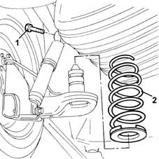

4420A40 l/h or r/h rear suspension coil spring (one) - r+r
- Path
- Procedures > 44 SUSPENSION AND WHEELS > 4420 REAR SUSPENSION > 4420A rear dampers and springs > 4420A40 l/h or r/h rear suspension coil spring (one) - r+r
- Kind
- repair procedure (removal / refitting; the operation number is the code)
- Applies to
- all engines; all production periods
- Interactive page
- https://sloeber94.github.io/elrnDB-lYpsln/en/#/2429244
Applies to: all engines; all production periods
 Removing
Removing
 Refitting
RefittingPosition the vehicle on the ramp.
1. Undo the upper bolts fixing the rear suspension shock absorbers to the bodyshell.
2. Remove the rear suspension coil spring.

Applies to: all engines; all production periods
Refitting
Removing.
Place the rear suspension coil spring in its housing, positioning it correctly on the rear suspension axle.
Lower the vehicle so that the rear wheels are completely touching the ground.
Tighten the top bolt securing the rear suspension shock absorber to the bodyshell to the specified torque.
 | Fastening | Component | Ø | Value (daNm) |
|---|---|---|---|---|
- | Bolt | REAR DAMPER | M10 | (Bodyshell side) 7.6 ÷ 8.4 |
Remove the car from the ramps.